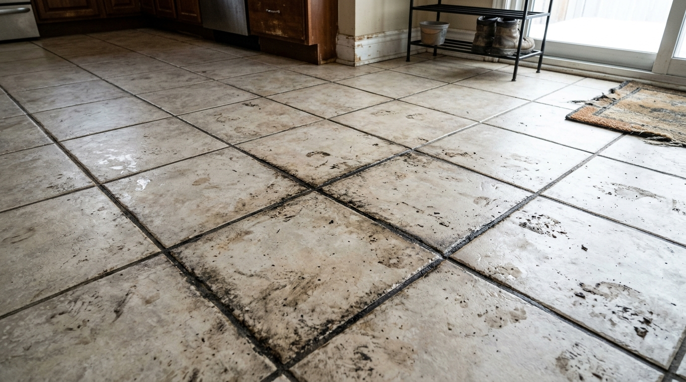

01
Tile Floor Cleaning
Refresh tiled floors with deep dirt extraction and grout-line scrubbing that restores luster to your high-traffic spaces.
Learn More
Professional tile & grout cleaning
Restore the beauty of your floors, bathrooms and kitchens with professional tile and grout cleaning designed to refresh your space.
A closer look
Slide the mop across the floor to reveal the deep-cleaned surface beneath years of grime.
 After · Clean Surface
After · Clean Surface

Before · Dirty SurfaceInteractive demonstration showing the exact same tile surface before and after professional deep extraction and grout scrubbing.
Thoughtful care for every surface
Focused cleaning for the tiled areas that work hard in your home or business.
Refresh tiled floors with deep dirt extraction and grout-line scrubbing that restores luster to your high-traffic spaces.
Learn More
Targeted sanitation and soap-scum removal for showers, tiled walls, and moisture-prone bathroom floors.
Learn More
Specialized degreasing and surface care for kitchen floors, prep zones, and hard-to-reach cabinet corners.
Learn More
Focused line-by-line cleaning and protective sealing to lift stubborn stains and revive aging grout.
Learn MoreA thoughtful approach
Careful methods, thoughtful communication and attention to the details that shape a clean finish.
Talk with our teamPurposeful tools selected for tiled surfaces and grout lines.
Cleaning choices considered for the materials in your space.
Attention to tile faces, grout lines, edges and transitions.
Extra care around corners, fixtures and other detailed areas.
Options shaped around the rooms and surfaces you want cleaned.
Clear conversations about your needs, preferences and next steps.
Simple from start to finish
A clear four-step path to help you understand what to expect.
Tell us which areas you would like us to look at.
We discuss the tile, grout and condition of the area.
Cleaning is carried out with care for the selected surfaces.
We review the completed areas and discuss any next steps.
A look at the surfaces we care for
Explore real photographic highlights of our tile restorations, grout line deep cleans, and hard surface treatments.
Customer stories
Real experiences from clients who trusted our professional cleaning to revive their tiled surfaces.
“Our textured living room and hallway tiles were completely dull after years of foot traffic. After a thorough deep clean, the grout lines look brand new and the whole home feels brighter.”
“We thought our walk-in shower tiles would need replacing due to stubborn mineral buildup and discolored grout. The team restored every seam cleanly without surface damage. Saved us thousands!”
“Exceptional attention to detail around our kitchen island and prep counters. The grease and grime were completely lifted, and the protective sealing has made daily upkeep effortless.”
Good to know
A few helpful details before you request a quote.
Have another question? Contact usTile materials and finishes vary. Share the surface details when you contact us so the appropriate cleaning approach can be discussed.
Some grout may be suitable for restoration options. An assessment can help clarify what is appropriate for your surfaces.
Use the quote request link and share the areas you would like cleaned. The team can follow up to discuss details.
Residential and commercial service options are available to discuss. Contact the team with your project details.
A fresh start for your surfaces
Get in touch today and tell us about your cleaning requirements.